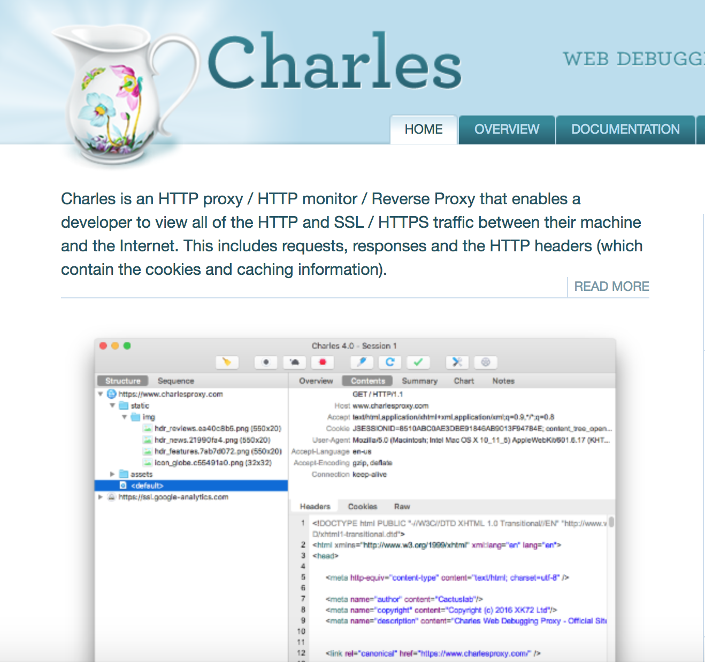

1.起因
因为另一个JR的帖子。看了他的github项目,发现很厉害。不过他的文字直播只是简单的比赛进程。不是虎扑App的文字直播。没办法看到来自三分剑地狱的火焰啊！所以我就想做一个虎扑App的文字直播的命令行版
2.开始
最开始当然是先抓包.手机抓包用的是Charles.

不过抓包的过程中发现,文字直播的内容只有进入文字直播的页面的时候才会获取一次所有数据。后续的直播内容没有抓包成功。这里就卡住了。不知道怎么回事。
后来才知道这是因为Charles只抓取了http, 并没有抓取所有的socket包。
但是自己自学编程, 对于基础知识部分几乎都是空白。所以只好一边搜索一边尝试抓取socket
3.使用Charles抓取http接口
3.1.http接口传参规则
虎扑的http接口传参一般为
{ |
3.2.client_id
其中client是手机的Imei。
IMEI就是移动设备国际身份码，我们知道正常的手机串码IMEI码是15位数字，
由TAC（6位，型号核准号码）、FAC（2位，最后装配号）、SNR（6位，厂商自行分配的串号）和SP（1位，校验位）。
其中tac搜索后找到了一个数据表,地址
3.3.android_id
随机64位数字的16进制
3.4.sign
这个参数一看就像是md5值。不过不清楚是哪个的md5值。经验告诉我是其他参数排序后的MD5值。不过结果不对。纠结了好久。想想估计是加salt了。于是卡主了。不晓得该怎么办了.然后没办法开始反编译hupu apk的旅途。
3.反编译Apk
下载虎扑android app解压后看到3个dex文件, classes.dex, classes2.dex, clsses3.dex
继续搜索之后。使用jdax
brew install jadx |
幸运的是一下子我就找到了一个参数HUPU_SALT。
加入进去之后sign结果正确
最后sign的生成方法就是
def getSortParam(**kwargs): |
4.socket 和 websocket
待填写
5.抓取socket
使用安卓模拟器 网易MuMu , 编译好的tcpdump二进制文件, 和 wireshark, 配合adb进行抓取
如果想要修改模拟器的网络设置
|
将文件导入wireshark
开始分析
筛选出websocket
发现大致的交互过程为:
# 连接部分 |
然后在github上找到了一个websocket客户端的库websocket-client.随后进行了连接客户端代码的编写